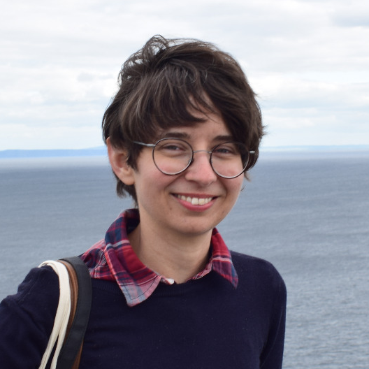
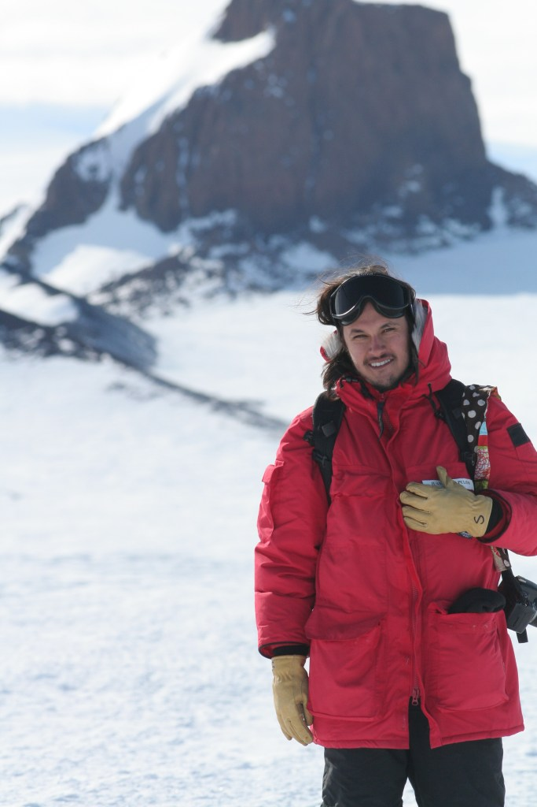
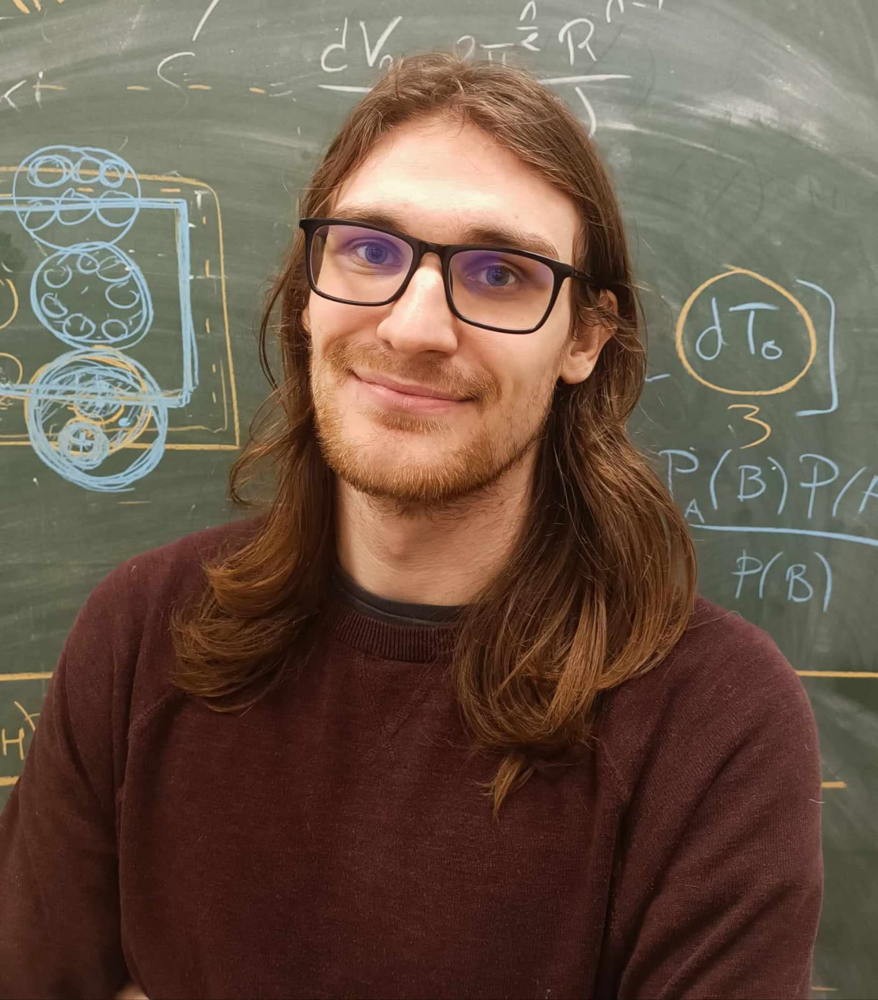
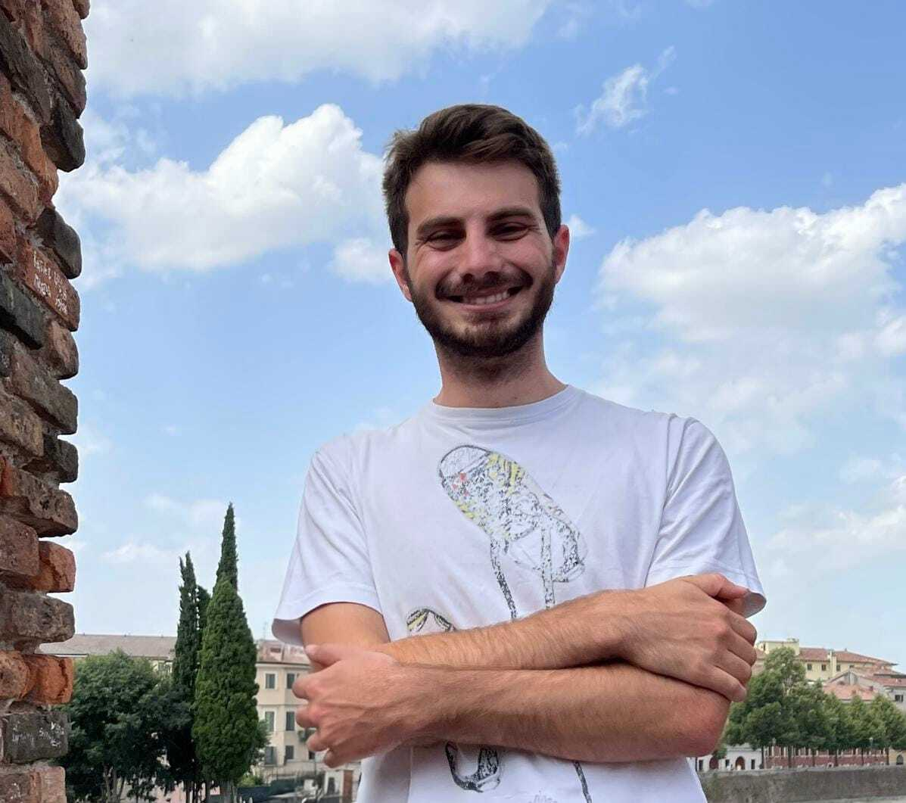

Upcoming talk
To be announcedTalk title to be announced
Speaker and affiliation to be announced
- Date
- To be confirmed
- Time & time zone
- To be confirmed
- Location
- To be confirmed
Abstract
The abstract of the upcoming seminar will appear here.
Upcoming talk
To be announcedSpeaker and affiliation to be announced
The abstract of the upcoming seminar will appear here.
Further seminar dates will be announced soon.
Schedule
Upcoming seminars, listed in date order.
The programme will be listed by month as talks are confirmed.
Video repository
Recordings of previous Interstellar SeMinar talks.
The video repository will be available to authorised participants.
Member sign-in will be available when the first recordings are published.SOC
The team behind Interstellar SeMinar.

University College London
Department of Physics and Astronomy
Royal Society University Research Fellow
Magnetic fields in star-forming clouds and dense cores, studied through submillimetre and far-infrared dust polarimetry.

University of Vienna
Department of Astronomy
Scientific researcher
Structure of the interstellar medium and the physical processes shaping Galactic gas and dust, using observations, simulations and statistical tools.

CEA Paris-Saclay
ERC ECOGAL
Postdoctoral researcher
Magnetised interstellar turbulence, radio polarisation and Faraday tomography, connecting numerical models with observations.

CEA Paris-Saclay
IRFU · Département d’Astrophysique
Postdoctoral researcher
Numerical simulations of star formation, stellar feedback and filamentary clouds, with close comparisons to observations.